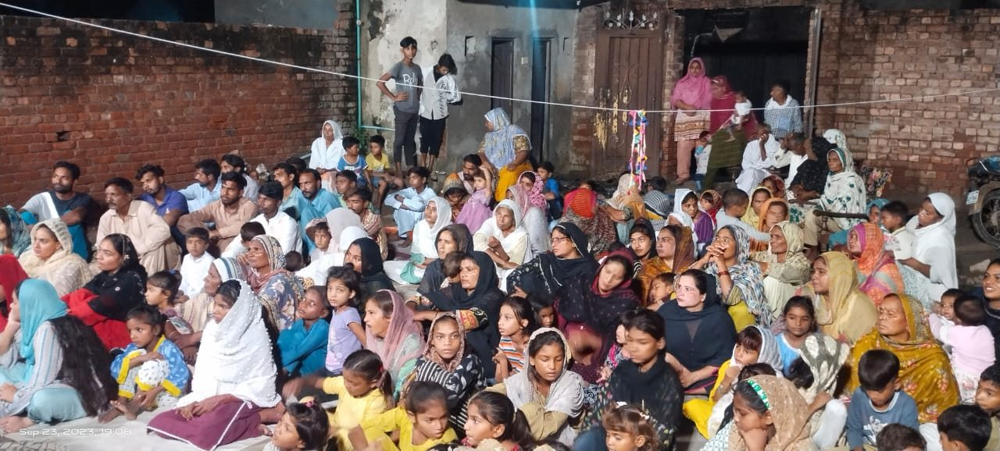
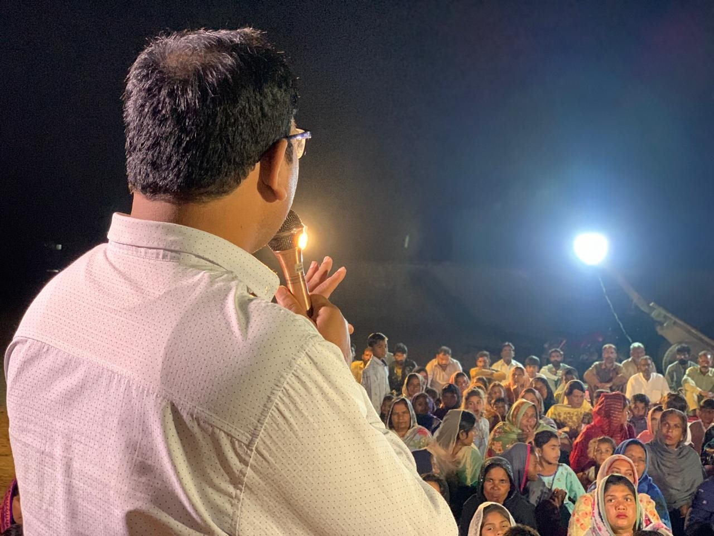
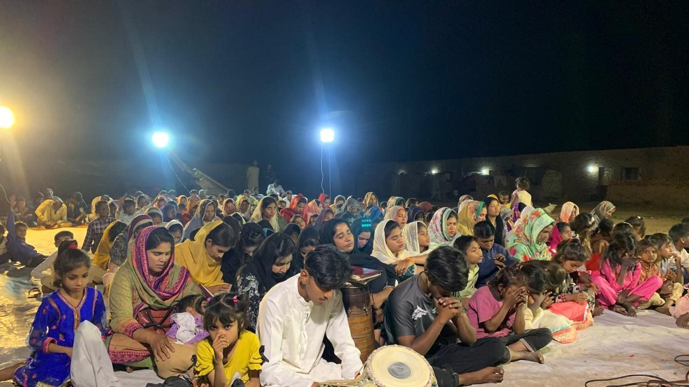
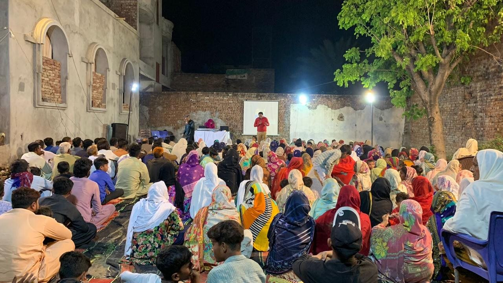
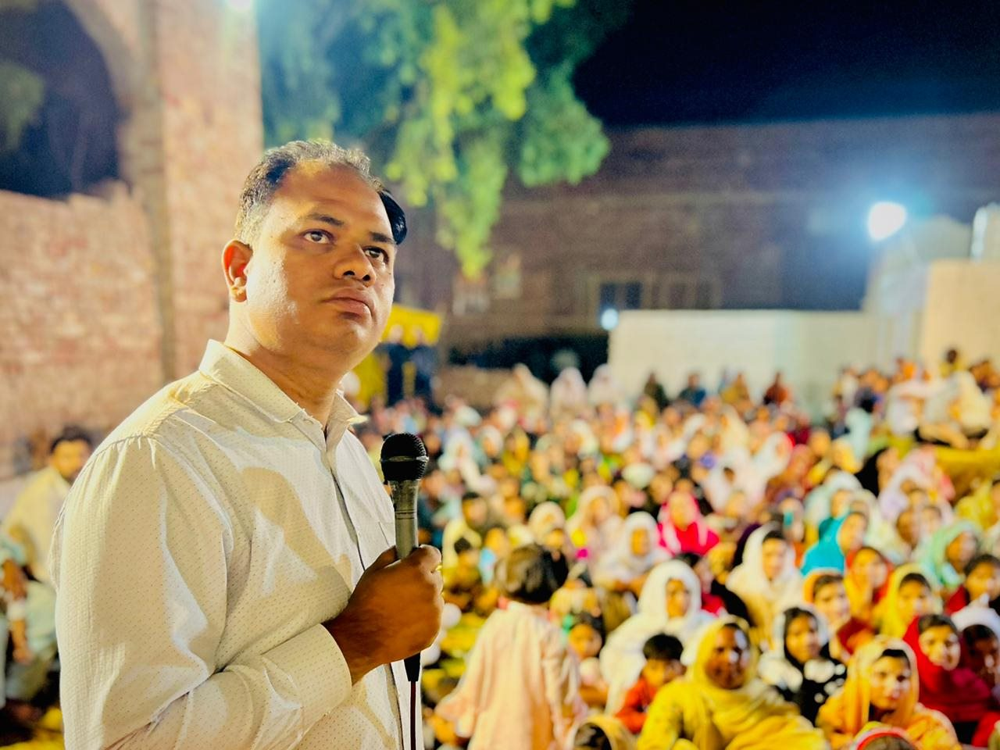

The Will of the Father Organization · Lahore, Pakistan
Sharing the Gospel across communities
We visit villages, towns, streets, and cities to share the Gospel through preaching, prayer, and worship. We also help new believers grow through discipleship and ongoing spiritual support.
See our photosMinistry in action
A look at our work.
These photographs show gatherings and activities from our ministry in Pakistan.






Pray · Serve · Give
Join us in serving
our neighbors.
For prayer requests, ministry information, or donation instructions, contact our team.